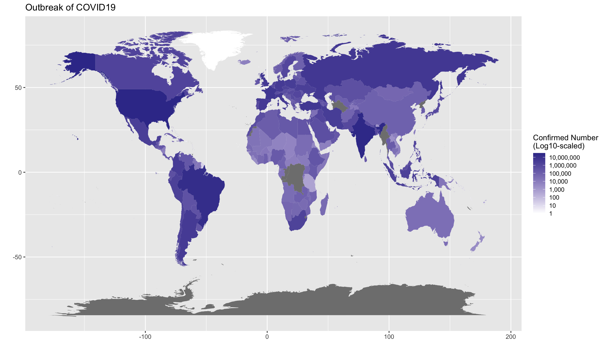

Chapter 5 Data Visualization
5.1 Why Visualization?
Data visualization is very important. I would like to illustrate this point with two interesting examples.
First, let us take a look at an interesting dataset datasaurus.csv:
| group | x | y |
|---|---|---|
| dino | 95.38460 | 36.794900 |
| dino | 98.20510 | 33.718000 |
| away | 91.63996 | 79.406603 |
| away | 82.11056 | 1.210552 |
| h_lines | 98.28812 | 30.603919 |
| h_lines | 95.24923 | 30.459454 |
| v_lines | 89.50485 | 48.423408 |
| v_lines | 89.50162 | 45.815179 |
| x_shape | 84.84824 | 95.424804 |
| x_shape | 85.44619 | 83.078294 |
| star | 82.54024 | 56.541052 |
| star | 86.43590 | 59.792762 |
| high_lines | 92.24840 | 32.377154 |
| high_lines | 96.08052 | 28.053601 |
| dots | 77.92604 | 50.318660 |
| dots | 77.95444 | 50.475579 |
| circle | 85.66476 | 45.542753 |
| circle | 85.62249 | 45.024166 |
| bullseye | 91.72601 | 52.623353 |
| bullseye | 91.73554 | 48.970211 |
| slant_up | 92.54879 | 42.901908 |
| slant_up | 95.26053 | 46.008830 |
| slant_down | 95.44349 | 36.189702 |
| slant_down | 95.59342 | 33.234129 |
| wide_lines | 77.06711 | 51.486918 |
| wide_lines | 77.91587 | 45.926843 |
We group the dataset by group and for each group we computate the mean scores and standard deviations of x and y. According to the summary statistics of each group, they look indeed similar:
| group | x_fn1 | y_fn1 | x_fn2 | y_fn2 |
|---|---|---|---|---|
| away | 54.266 | 47.835 | 16.770 | 26.940 |
| bullseye | 54.269 | 47.831 | 16.769 | 26.936 |
| circle | 54.267 | 47.838 | 16.760 | 26.930 |
| dino | 54.263 | 47.832 | 16.765 | 26.935 |
| dots | 54.260 | 47.840 | 16.768 | 26.930 |
| h_lines | 54.261 | 47.830 | 16.766 | 26.940 |
| high_lines | 54.269 | 47.835 | 16.767 | 26.940 |
| slant_down | 54.268 | 47.836 | 16.767 | 26.936 |
| slant_up | 54.266 | 47.831 | 16.769 | 26.939 |
| star | 54.267 | 47.840 | 16.769 | 26.930 |
| v_lines | 54.270 | 47.837 | 16.770 | 26.938 |
| wide_lines | 54.267 | 47.832 | 16.770 | 26.938 |
| x_shape | 54.260 | 47.840 | 16.770 | 26.930 |
So you may conclude that all groups show similar behaviors in x and y measures. But what if we plot all subjects by groups?

See? What you see is sometimes NOT what you believe.
Another example is Simpson’s Paradox, which occurs when trends that appear when a dataset is separated into groups reverse when the data are aggregated.

Based on the above graph, you would probably conclude that when x increases, y decreases. However, if you plot the scatter plots by groups, you may get the opposite conclusions. All correlations between x and y in all groups are now positive.

5.2 ggplot2

R is famous for its power in data visualization. So why don’t we delve right into this beauty in R? In this chapter, we will introduce you a very powerful graphic library in R, ggplot2. For any data visualization, there are three basic elements:
- Data: The raw material of your visualization, i.e., a data frame.
- Aesthetics: The mapping of your data to aesthetic attributes, such as
x,y,color,linetype,fill. - Geometric Objects: The layers of geometric objects you would like to see on the plots, e.g., lines, points etc.

I will demonstrate some basic functions of ggplot2, with the pre-loaded dataset mpg:
- model: manufacturer model name
- displ: engine displacement, in litres (排氣量)
- hwy: highway miles per gallon
- cty: city miles per gallon
- cyl: number of cylinders (汽缸數目)
- class: car type
We can look at the relation between displ and hwy:


ggplot()initializes the basic frame of the graph, withdata = mpgspecifying the data frame on which the plot is builtaes()further specifies the mapping of axises and the factors in the data frame.aes(x = displ, y = hwy)indicates thatdisplis mapped as thexaxis andhwyasyaxis+means that you want to add one layer of the graph to the template.geom_point()means that you want to add a layer of point graph.
5.3 One-variable Graph
- Continuous variable


- Categorical variable

5.4 Two-variable Graph
- Continuous X, Continuous Y

- Discrete X, Continuous Y

- Discrete X, Discrete Y
ggplot(data = mpg, aes(x = manufacturer, y = class)) +
geom_count() +
theme(axis.text.x = element_text(angle=-90))
5.5 Adding Other Aesthetic Features
Now I would like to demonstrate how we can add additional aesthetic mappings to your graphs.
- You can add
color = ...in theaes()to creat the graphs on the basis of a grouping factor
We can introduce a third variable into the plot by modifying the color of the points based on the value of that third variable. Color is an aesthetic and the color of each point can be mapped to a variable. Note that the x-coordinates and y-coordinates are aesthetics too, and they got mapped to the displ and hwy variables, respectively. In this case we will map the color to the drv variable which indicates whether a car is front wheel drive, rear wheel drive, or 4-wheel drive.

- We can also add another geom object, such as a smooth line:

Could you predict what kind of graph you would get with the following code?
- We can add texts and labels as well
ggplot(data = mpg, aes(x = displ, y = hwy, color = drv)) +
geom_point() +
labs(x = "Engine Displacement (litres)", y = "Highway Miles per Gallon",
title = "Scatter Plot -- DISPL by HWY")
5.6 Saving Plots
Saving a ggplot can be easily done by ggsave(). You can first save a ggplot object to a variable and then use ggsave() to output the ggplot object to an external file. It is recommended to use common image formats for publications, e.g., png, jpg.
my_first_graph <- ggplot(data = mpg, aes(x = displ, y = hwy, color = drv)) +
geom_point() +
labs(x = "Engine Displacement (litres)", y = "Highway Miles per Gallon",
title = "Scatter Plot -- DISPL by HWY")
class(my_first_graph) # check the class## [1] "gg" "ggplot"